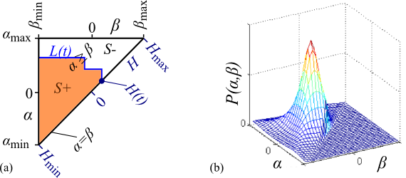
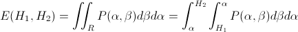
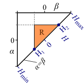

Two different types of hysteresis models are supported:
Extends from Modelica.Icons.Information (Icon for general information packages).
| Name | Description |
|---|---|
Preisach | Preisach Hysteresis Model |
Tellinen | Tellinen Hysteresis Model |
The Tellinen hysteresis model is described in more detail in [Te98, ZB12]. It is a simple model to describe the static magnetic hysteresis behavior of ferromagnetic materials. It only requires the Upper BU(H) and lower BL(H) branches of the limiting hysteresis loop for the adaption to a material specific hysteresis shape. Coming from negative magnetic saturation with increasing magnetic field strength H(t) the flux density B(T) travels along the BL(H). Coming from positive saturation with a decreasing H(t), B(t) travels along BU(H). The Tellinen model is defined by the following equation, which gives a calculation rule for time derivative of the magnetic flux density B(t) with respect to the current value of B(t), H(t) and its slope dH(t)/dt.
|
Therein, SU(H) and SL(H) are the derivatives of limiting branches of the hysteresis loop with respect to the magnetic field strength H, as illustrated in Fig 1.
Fig. 1: Upper BU(H) and lower BL(H) branches of the hysteresis envelope curve, their corresponding slope functions SUH(H) and SLH(H) and the actual operating point H(t), B(t).
|
Extends from Modelica.Icons.Information (Icon for general information packages).
This section gives an very brief overview of the Preisach hysteresis model, which is explained in more detail in [Pr35, Ma03, Zi12]. The classical Preisach hysteresis model describes the course of magnetic flux density B(t) of a ferromagnetic core material as a function of the course of the magnetic field strength H(t) and its history. The model assumes an infinite set of elementary hysteresis operators γαβ. The simple rectangular pattern of the output γαβH(t) of such an operator with its upper and lower switching limits α and β is shown Fig. 1.

|
Due to α≥β, the switching limits α and β span a right triangular region, often referred to as Preisach plane (see Fig. 2a). For each single point (α,β) on this plane exactly one elementary hysteresis operator is defined with exactly the switching limits of α and β.
|  |
Additionally, the Preisach distribution function P(α,β) is defined over the Preisach plane, which gives each operator an individual weight (see Fig. 2b). The Preisach plane can be separated into two regions. The S+ region, in which all the operators being in the "+1" state and the S- region, in which all the operators being in the "-1" state. The line L(t), which separates the regions S+ and S- develops along with the variation of the magnetic field strength H(t) and holds information about its history. The current magnetic flux density can than be computed as follows:

|
The equation above shows, that the double integral of P(α,β) have to be computed in every time step to compute B(t) according to the Preisach hysteresis model. Typically, the Preisach distribution function is not analytically integrable twice. A numerical double integration in every time step would be very computationally intensive. Therefore, an analytical description of the Everett function [YUY89] is used to define the hysteresis shape.
|  |
The Everett function returns the change in magnetization which results when all elementary hysteresis operators of the region R switch from "-1" to the "+1" state (see Fig 3.). The entire Region S+ can be now be decomposed into several smaller triangular regions similar to R. This way the magnetization B(t) can be efficiently evaluated without the need of the numerical integration of the Preisach distribution function.
|  |
According to [YUY89] the used analytical form of the Everett function is parameterized by 8 parameters. Several parameter sets were identified to fit measured or published static hysteresis behavior of different materials. These predefined parameter sets are stored in FluxTubes.Material.HysteresisEverettParameter library and can be used with the GenericHystPreisachEverett flux tube element. Additionally, also the GenericHystTellinenEverett element can use this library.
Extends from Modelica.Icons.Information (Icon for general information packages).
Generated 2018-10-22 14:45:40 EDT by MapleSim.